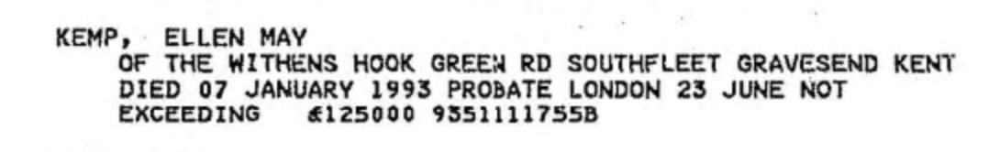
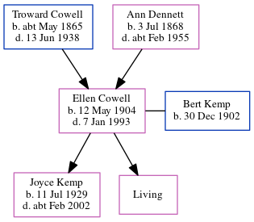

Ellen May Kemp (née Cowell) 1904 - 1993
[ Home ] | [ Calendar ] | [ Surnames Index ] | [ Errors ] | [ Family History ]The child of Troward Cowell (a horseman) and Ann Dennett, Ellen Cowell, the first cousin twice-removed on the mother's side of Nigel Horne, was born in Birchington, Kent, England on 12 May 19041,2,3,4,5 and married Bert Kemp (a farm bailiff & tractor driver with whom she had 2 children: Joyce Margaret A and Mavis M, along with 1 surviving child) in Thanet, Kent, England around Nov 19277.
During her life, she was living at Gore End Farm in Birchington on 2 Apr 19118; at Granville House, Acol, Kent on 19 Jun 19219; at 6 Woodchurch Cottages, Margate, Kent on 29 Sept 19392; and at Hook Green Road, Southfleet, Kent in 1993.
She died on 7 Jan 1993 in Gravesend, Kent, England4,6.
Parents
- Troward was born c. May 1865
- Ann was born on 3 Jul 1868
Children
- Joyce Margaret A was born on 11 Jul 1929
Citations
- 1911 England Census Online publication - Provo, UT, USA: Ancestry.com Operations, Inc., 2011.Original data - Census Returns of England and Wales, 1911. Kew, Surrey, England: The National Archives of the UK (TNA), 1911. Data imaged from the National Archives, London, England.
- 1939 Register - Findmypast (was the wife of the head of the household)
- England & Wales births 1837-2006 - Findmypast
- England & Wales deaths 1837-2007 - Findmypast
- England & Wales, FreeBMD Birth Index, 1837-1915 Online publication - Provo, UT, USA: The Generations Network, Inc., 2006.Original data - General Register Office. England and Wales Civil Registration Indexes. London, England: General Register Office. © Crown copyright. Published by permission of the Cont
- England & Wales Government Probate Death Index 1858-2019 - Findmypast
- England & Wales Marriages 1837-2005 - Findmypast
- 1911 Census for England & Wales - Findmypast (was age 6 and the daughter of the head of the household)
- 1921 Census Of England & Wales - Findmypast (was age 17 and the daughter of the head of the household)
Media
Ellen May Cowell - Probate

1911 England, Wales & Scotland Census Transcription - GBC-1911-RG14-04479-0323-5
England & Wales births 1837-2006 - BMD/B/1904/2/AZ/000137/067
England & Wales marriages 1837-2005 - BMD/M/1927/4/AZ/000252/115
England & Wales deaths 1837-2007 - BMD/D/1993/1/79674033
1911 Census For England & Wales - GBC-1911-RG14-04479-0323-6
1939 Register Transcription - TNA-R39-1752-1752A-002-25
England & Wales Government Probate Death Index 1858-2019 - GBOR/GOVPROBATE/C/1993-1993/00119255
1921 Census of England & Wales - GBC/1921/RG15/04433/0277/04
Family Tree
Map
Generated by ged2site. Last updated on Jul 3, 2024
Known Issues
Residence record for 1993 contains no citation
Listed in the residence for 1993, but spouse Bert Kemp is not